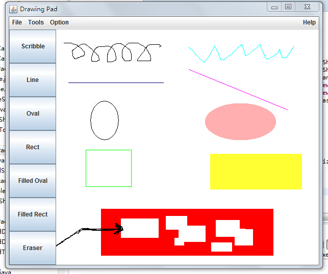
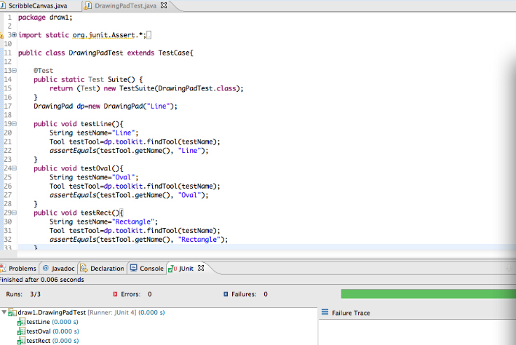

Date |
Time |
Task |
Time Spent (hrs) |
9-Nov-2014 |
9:00 AM |
Read Text and Lecture |
2.0 |
9-Nov-2014 |
2:00 PM |
Plan code |
4.0 |
10-Nov-2014 |
9:00 AM |
Write HTML and Applet container |
2.0 |
10-Nov-2014 |
3:00 PM |
Install and test code |
4.0 |
package draw2;
import java.awt.*;
import scribble3.BackGroundColor;
import draw1.*;
public class Eraser extends RectangleShape {
public void draw(Graphics g) {
int x = Math.min(x1, x2);
int y = Math.min(y1, y2);
int w = Math.abs(x1 - x2) + 1;
int h = Math.abs(y1 - y2) + 1;
BackGroundColor bgColor = new BackGroundColor(); //New
g.setColor(bgColor.getColor());
g.fillRect(x, y, w, h);
}
}
package draw2;
import java.awt.*;
import java.awt.event.*;
import java.io.*;
import javax.swing.*;
import scribble3.*;
import draw1.*;
public class DrawingPad extends draw1.DrawingPad {
public DrawingPad(String title) {
super(title);
}
protected void initTools() {
toolkit = new ToolKit();
toolkit.addTool(new ScribbleTool(canvas, "Scribble"));
toolkit.addTool(new TwoEndsShapeTool(canvas, "Line", new LineShape()));
toolkit.addTool(new TwoEndsShapeTool(canvas, "Oval", new OvalShape()));
toolkit.addTool(new TwoEndsShapeTool(canvas, "Rect", new RectangleShape()));
toolkit.addTool(new TwoEndsShapeTool(canvas, "Filled Oval", new FilledOvalShape()));
toolkit.addTool(new TwoEndsShapeTool(canvas, "Filled Rect", new FilledRectangleShape()));
toolkit.addTool(new TwoEndsShapeTool(canvas, "Eraser", new Eraser())); //New
drawingCanvas.setTool(toolkit.getTool(0));
}
public static void main(String[] args) {
JFrame frame = new draw2.DrawingPad("Drawing Pad");
frame.setSize(width, height);
Dimension screenSize = Toolkit.getDefaultToolkit().getScreenSize();
frame.setLocation(screenSize.width/2 - width/2,
screenSize.height/2 - height/2);
frame.show();
}
}
package draw2;
import java.awt.*;
import scribble3.*;
import draw1.*;
public class TwoEndsShapeTool extends AbstractTool {
public TwoEndsShapeTool(ScribbleCanvas canvas, String name, TwoEndsShape prototype) {
super(canvas, name);
this.prototype = prototype;
}
public void startShape(Point p) {
if (prototype != null) {
canvas.mouseButtonDown = true;
xStart = canvas.x = p.x;
yStart = canvas.y = p.y;
Graphics g = canvas.getGraphics();
g.setXORMode(Color.darkGray);
g.setColor(Color.lightGray);
prototype.drawOutline(g, xStart, yStart, xStart, yStart);
}
}
public void addPointToShape(Point p) {
if (prototype != null &&
canvas.mouseButtonDown) {
Graphics g = canvas.getGraphics();
g.setXORMode(Color.darkGray);
g.setColor(Color.lightGray);
prototype.drawOutline(g, xStart, yStart, canvas.x, canvas.y);
prototype.drawOutline(g, xStart, yStart, p.x, p.y);
}
}
public void endShape(Point p) {
canvas.mouseButtonDown = false;
if (prototype != null) {
try {
TwoEndsShape newShape = (TwoEndsShape) prototype.clone();
newShape.setColor(canvas.getCurrentColor());
newShape.setEnds(xStart, yStart, p.x, p.y);
canvas.addShape(newShape);
} catch (CloneNotSupportedException e) {}
Graphics g = canvas.getGraphics();
g.setPaintMode();
canvas.repaint();
}
}
public TwoEndsShape getShape(){
return prototype;
}
protected int xStart, yStart;
protected TwoEndsShape prototype;
}
package scribble3;
import java.awt.Color;
import java.awt.Dimension;
import java.awt.Graphics;
import java.awt.Point;
import java.util.*;
import java.io.*;
import java.awt.event.*;
import java.util.EventListener;
import javax.swing.*;
public class ScribbleCanvas extends JPanel {
public ScribbleCanvas() {
// calling factory method
listener = makeCanvasListener();
addMouseListener((MouseListener) listener);
addMouseMotionListener((MouseMotionListener) listener);
}
public void setCurrentColor(Color curColor) {
this.curColor = curColor;
}
public Color getCurrentColor() {
return curColor;
}
public void addShape(Shape shape) {
if (shape != null) {
shapes.add(shape);
}
}
public void paint(Graphics g) {
Dimension d = getSize();
//Background color
BackGroundColor bgColor = new BackGroundColor();
g.setColor(bgColor.getColor());
g.fillRect(0, 0, d.width, d.height);
g.setColor(Color.black);
if (shapes != null) {
Iterator iter = shapes.iterator();
while (iter.hasNext()) {
Shape shape = (Shape) iter.next();
if (shape != null) {
shape.draw(g);
}
}
}
}
public void newFile() {
shapes.clear();
repaint();
}
public void openFile(String filename) {
try {
ObjectInputStream in = new ObjectInputStream(new FileInputStream(filename));
shapes = (List) in.readObject();
in.close();
repaint();
} catch (IOException e1) {
System.out.println("Unable to open file: " + filename);
} catch (ClassNotFoundException e2) {
System.out.println(e2);
}
}
public void saveFile(String filename) {
try {
ObjectOutputStream out = new ObjectOutputStream(new FileOutputStream(filename));
out.writeObject(shapes);
out.close();
System.out.println("Save drawing to" + filename);
} catch (IOException e) {
System.out.println("Unable to write file: " + filename);
}
}
// factory method
protected EventListener makeCanvasListener() {
return new ScribbleCanvasListener(this);
}
protected List shapes = new ArrayList();
protected Color curColor = Color.black;
protected EventListener listener;
public boolean mouseButtonDown = false;
public int x, y;
}
package scribble3;
import java.awt.*;
import java.awt.event.*;
import java.io.*;
import javax.swing.*;
public class Scribble extends JFrame {
public Scribble(String title) {
super(title);
// calling factory method
canvas = makeCanvas();
getContentPane().setLayout(new BorderLayout());
menuBar = createMenuBar();
getContentPane().add(menuBar, BorderLayout.NORTH);
getContentPane().add(canvas, BorderLayout.CENTER);
addWindowListener(new WindowAdapter() {
public void windowClosing(WindowEvent e) {
if (exitAction != null) {
exitAction.actionPerformed(new ActionEvent(Scribble.this, 0, null));
}
}
});
}
protected JMenuBar createMenuBar() {
JMenuBar menuBar = new JMenuBar();
JMenu menu;
JMenuItem mi;
// File menu
menu = new JMenu("File");
menuBar.add(menu);
mi = new JMenuItem("New");
menu.add(mi);
mi.addActionListener(new NewFileListener());
mi = new JMenuItem("Open");
menu.add(mi);
mi.addActionListener(new OpenFileListener());
mi = new JMenuItem("Save");
menu.add(mi);
mi.addActionListener(new SaveFileListener());
mi = new JMenuItem("Save As");
menu.add(mi);
mi.addActionListener(new SaveAsFileListener());
menu.add(new JSeparator());
exitAction = new ExitListener();
mi = new JMenuItem("Exit");
menu.add(mi);
mi.addActionListener(exitAction);
// option menu
menu = new JMenu("Option");
menuBar.add(menu);
mi = new JMenuItem("Color");
menu.add(mi);
mi.addActionListener(new ColorListener());
//New menu item - Background Color
mi = new JMenuItem("Background Colo");
menu.add(mi);
mi.addActionListener(new BgColorListener());
menuBar.add(Box.createHorizontalGlue());
// Help menu
menu = new JMenu("Help");
menuBar.add(menu);
mi = new JMenuItem("About");
menu.add(mi);
mi.addActionListener(new AboutListener());
return menuBar;
}
// factory method
protected ScribbleCanvas makeCanvas() {
return new ScribbleCanvas();
}
protected void newFile() {
currentFilename = null;
canvas.newFile();
setTitle("Scribble Pad");
}
protected void openFile(String filename) {
currentFilename = filename;
canvas.openFile(filename);
setTitle("Scribble Pad [" + currentFilename + "]");
}
protected void saveFile() {
if (currentFilename == null) {
currentFilename = "Untitled";
}
canvas.saveFile(currentFilename);
setTitle("Scribble Pad [" + currentFilename + "]");
}
protected void saveFileAs(String filename) {
currentFilename = filename;
canvas.saveFile(filename);
setTitle("Scribble Pad [" + currentFilename + "]");
}
class NewFileListener implements ActionListener {
public void actionPerformed(ActionEvent e) {
newFile();
}
}
class OpenFileListener implements ActionListener {
public void actionPerformed(ActionEvent e) {
int retval = chooser.showDialog(null, "Open");
if (retval == JFileChooser.APPROVE_OPTION) {
File theFile = chooser.getSelectedFile();
if (theFile != null) {
if (theFile.isFile()) {
String filename = chooser.getSelectedFile().getAbsolutePath();
openFile(filename);
}
}
}
}
}
class SaveFileListener implements ActionListener {
public void actionPerformed(ActionEvent e) {
saveFile();
}
}
class SaveAsFileListener implements ActionListener {
public void actionPerformed(ActionEvent e) {
int retval = chooser.showDialog(null, "Save As");
if (retval == JFileChooser.APPROVE_OPTION) {
File theFile = chooser.getSelectedFile();
if (theFile != null) {
if (!theFile.isDirectory()) {
String filename = chooser.getSelectedFile().getAbsolutePath();
saveFileAs(filename);
}
}
}
}
}
class ExitListener implements ActionListener {
public void actionPerformed(ActionEvent e) {
int result = JOptionPane.showConfirmDialog(null,
"Do you want to exit Scribble Pad?",
"Exit Scribble Pad?",
JOptionPane.YES_NO_OPTION);
if (result == JOptionPane.YES_OPTION) {
saveFile();
System.exit(0);
}
}
}
class ColorListener implements ActionListener {
public void actionPerformed(ActionEvent e) {
Color result = dialog.showDialog();
if (result != null) {
canvas.setCurrentColor(result);
}
}
protected ColorDialog dialog =
new ColorDialog(Scribble.this, "Choose a color", canvas.getCurrentColor());
}
//New action listener for Background color selection
class BgColorListener implements ActionListener {
public void actionPerformed(ActionEvent e) {
Color c = dialog.showDialog();
if (c != null) {
BackGroundColor bgColor = new BackGroundColor();
bgColor.setColor( c);
repaint();
}
}
protected ColorDialog dialog =
new ColorDialog(Scribble.this, "Choose color", canvas.getCurrentColor());
}
class AboutListener implements ActionListener {
public void actionPerformed(ActionEvent e) {
JOptionPane.showMessageDialog(null,
"DrawingPad version 1.0\\nCopyright (c) Xiaoping Jia 2002", "About",
JOptionPane.INFORMATION_MESSAGE);
}
}
protected ScribbleCanvas canvas;
protected JMenuBar menuBar;
protected String currentFilename = null;
protected ActionListener exitAction;
protected JFileChooser chooser = new JFileChooser(".");
public static void main(String[] args) {
JFrame frame = new Scribble("Scribble Pad");
frame.setSize(width, height);
Dimension screenSize = Toolkit.getDefaultToolkit().getScreenSize();
frame.setLocation(screenSize.width/2 - width/2,
screenSize.height/2 - height/2);
frame.setVisible(true);
}
protected static int width = 500;
protected static int height = 500;
}
}

